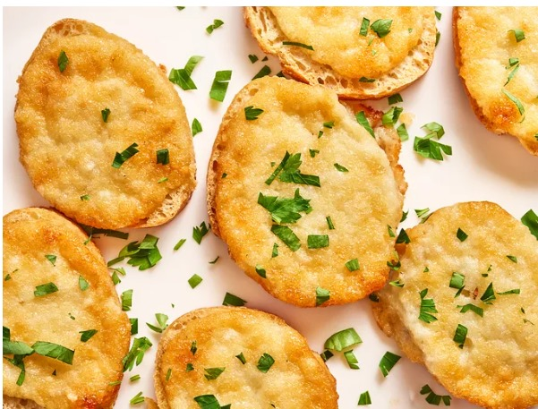

baguette slices topped with Parmesan, mayo, and grated onion
combine for the perfect bite. They're cheap,quick and easy to make
for parties.
by Nicloe McLaughlin

Prep Time: 5 mins
Cook Time: 10 mins
Total Time: 15 mins
Servings: 15
Yield: 15 Servings
Ingredients
- ½ cup grated Parmesan
- ½ cup mayonnaise
- ½ onion,grated,juice reserved
- ½baguette, thinly sliced
Directions:
Steps- Preheat the oven to 400 degrees F (200 degrees C )
- Combine Parmesan cheese, mayonnaise, onion, and reserved onion juice in a bowl; stir together until well blended. Spread the mixture thickly on baguette slices and set on a large baking sheet.
- Bake in the preheated oven until cheese is melted and bread is lightly toasted, about 10 minutes.
Cook's Note:
The cheaper, pre-grated Parmesan cheese works better in this recipe.
Take and Bake baguettes work especially well since they don't get too hard when baking.
Nutrition Facts
per serving:131 calories Total Fat 5g Saturated Fat 1g Cholesterol 4mg Sodium 266mg Total Carbohydrate 17g Dietary Fiber 1g Total Sugars 2g Protein 4g Vitamin C 0mg Calcium 36mg Iron 1mg Potassium 46mg